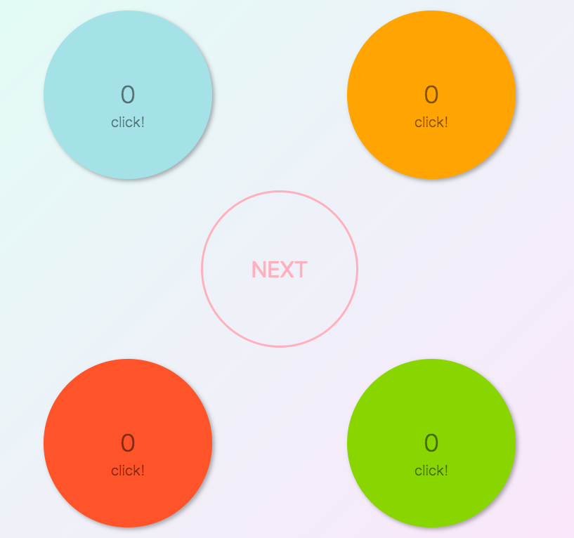
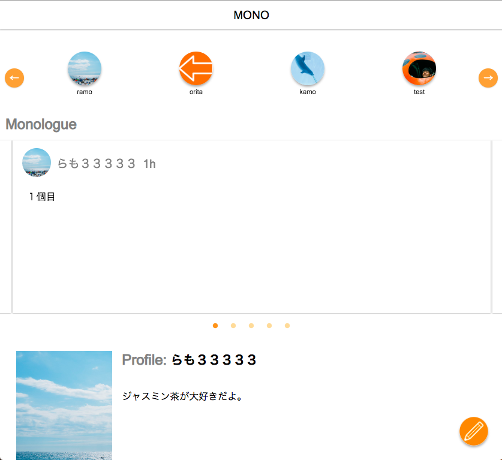

ramo798
学生です。ハッカソンや趣味でコーディングしています。

バックサイドを担当して、herokuにデプロイし使えるようにした。
色から気分を分析して、その時の気分に合った料理を提案してくれるというアプリケーション

バックサイドを担当して、herokuにデプロイし使えるようにした。
Instagramのストーリーのような見た目のUIで、Twitterのように文章中心として使えるようなSNS